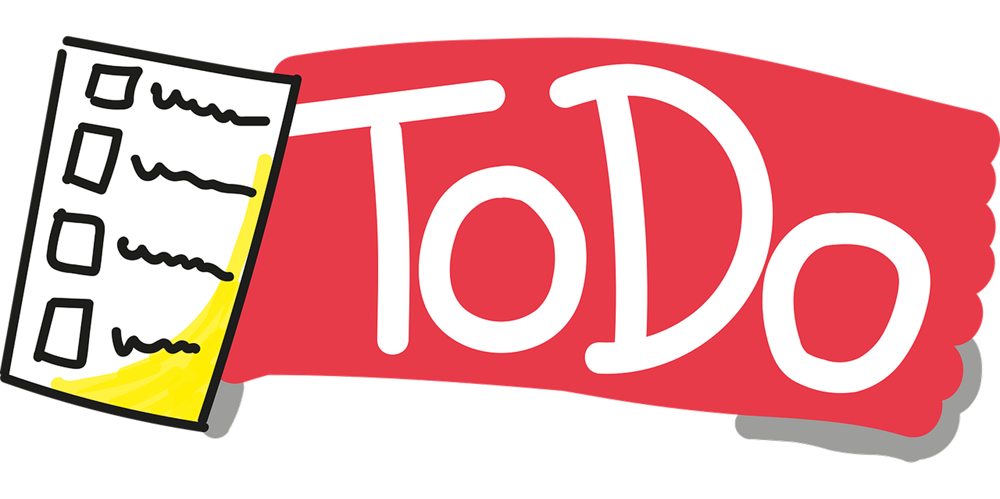

The
Task Manager
Assignment
task manager is a managment system with dashboard
It was founded in 2025 by Kashan Adnan.

task manager is a managment system with dashboard
It was founded in 2025 by Kashan Adnan.